2. Play with Chrome Developers Toolkit (DevTools), and "Network" tab.
Deezer 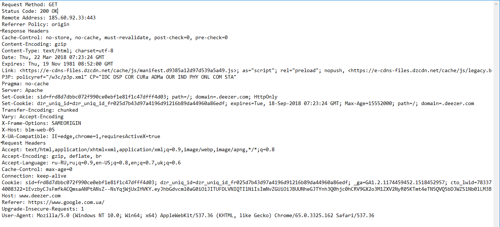 Facebook 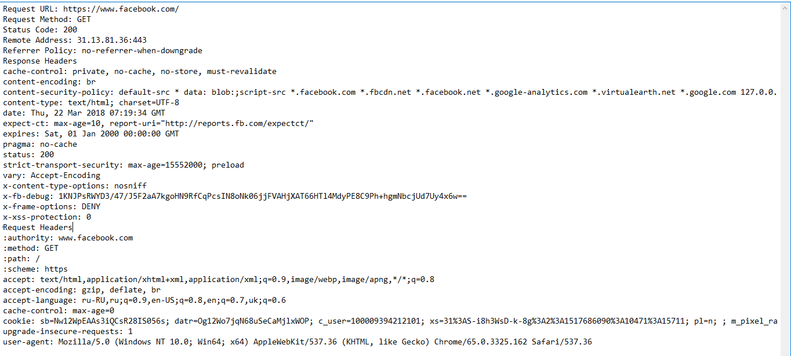 OLX 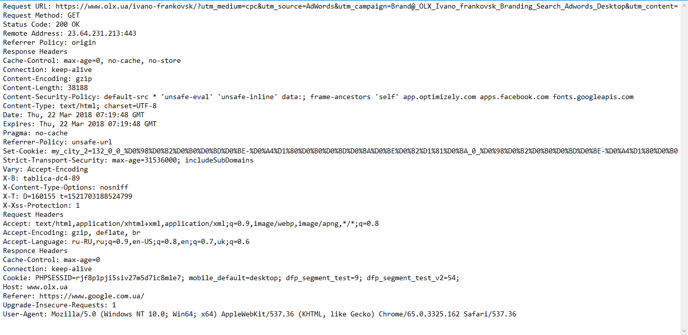 Prom 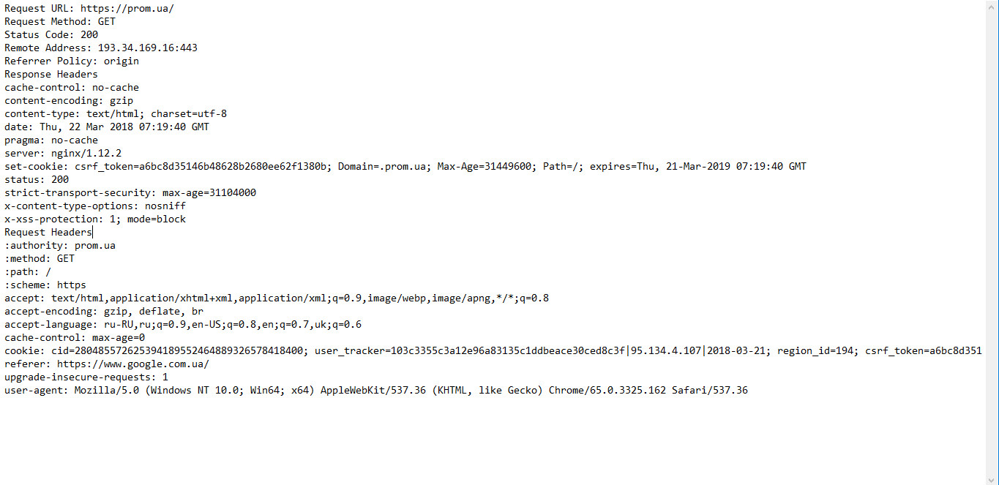 Rozetka 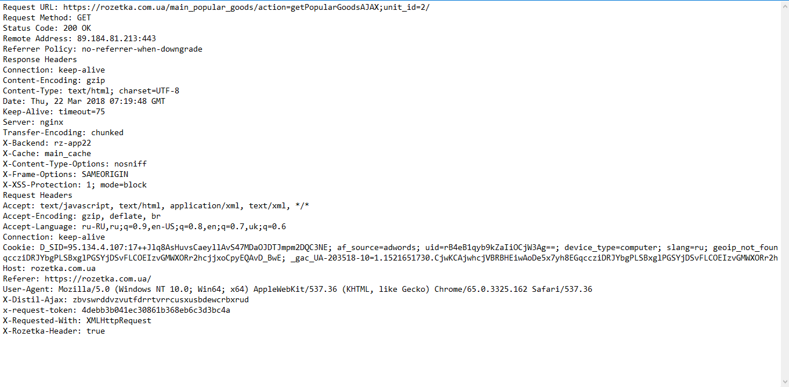 List of Headers
3. What are differences between HTTP version 1.0 and 1.1?
1. list of differences between 1.0 and 1.1
HTTP 1.0 :
відкриває нове підключення для кожного запиту / відповіді. І після кожної відповіді зв'язок буде закритий.
HTTP 1.1 :
дозволяє обслуговувати кілька доменів з єдиної IP-адреси.
дозволяє веб-браузеру відправляти кілька запитів через одне постійне з'єднання
економія пропускної здатності, оскільки, додалася підтримка кешу.
2. answer to question - how to pass user-data via GET? via POST? what is the diff?
GET призначений для отримання даних з сервера, обробляються дані на стороні сервера швидше за рахунок пустого тіла запиту, GET передає дані серверу використовуючи URL, запит можна зберегти, може кешуватися, не розриває HTTP з'єднання.
POST використовується для відправлення даних і передає дані, що підлягають обробці (наприклад, з форми HTML) в ідентифікований ресурс, дані включені в тіло http запиту, тому на стороні серверу обробляються дані повільніше, розриває HTTP з'єднання.
Передача даних методом POST більш безпечна, ніж GET, так як секретні дані (пароль) не відображаються безпосередньо в web-клієнті користувача, коли URL – видно майже завжди).
3. few samples of websites (and cases) where POST method is used
https://www.facebook.com/ - при реєстрації, авторизації, дописах
Request URL: https://www.facebook.com/ads/growth/aymt/load_client_side_tips/?channel_name=AYMTWWWGroupsMallModalChannelrequest_id=id_0.11336627047972048_1521729981649params[group_id]=215862018990490dpr=1
Request Method: POST
Status Code: 200
https://habrahabr.ru/top/ - авторизація, коментарі дописи
Request URL: https://www.facebook.com/ajax/bz
Request Method: POST
Status Code: 200
Remote Address: 31.13.81.36:443
Referrer Policy: origin-when-cross-origin
4. Use the "telnet" program.
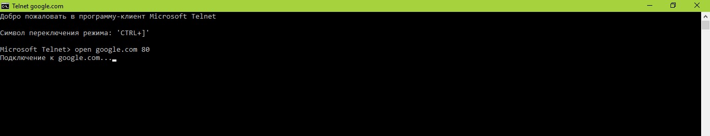 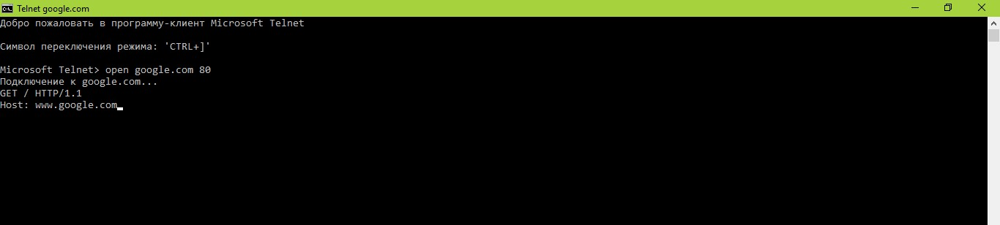 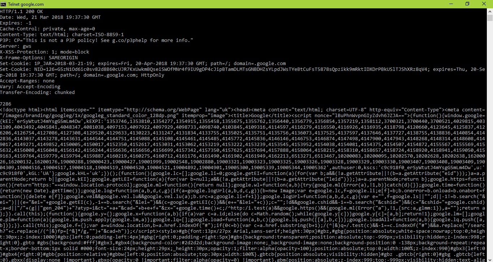5. Use actions on "Network" tab.
describe what feature have you used, and how you can use it in future
Використала Filter i Search – filter – сортує все по типах, search – знаходить потрібний елемент. Допоможе в майбутньому швидко знаходити потрібні файли (js, css, img) і моніторити їх розмір, швидкість завантаження, порядок завантаження а також їх статус.
6. Using the hurl.it: create a GET request to any website and analyze the response
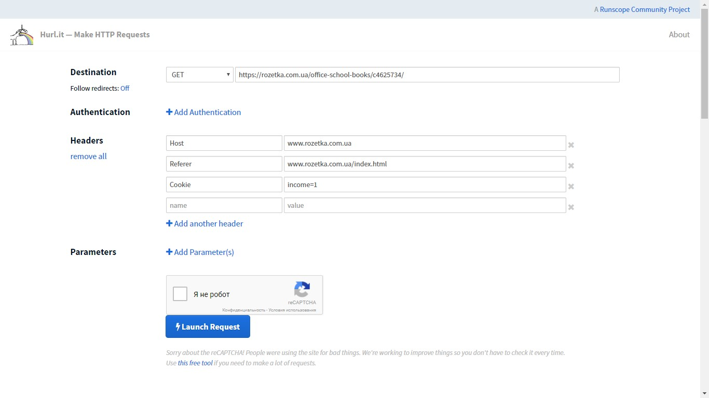 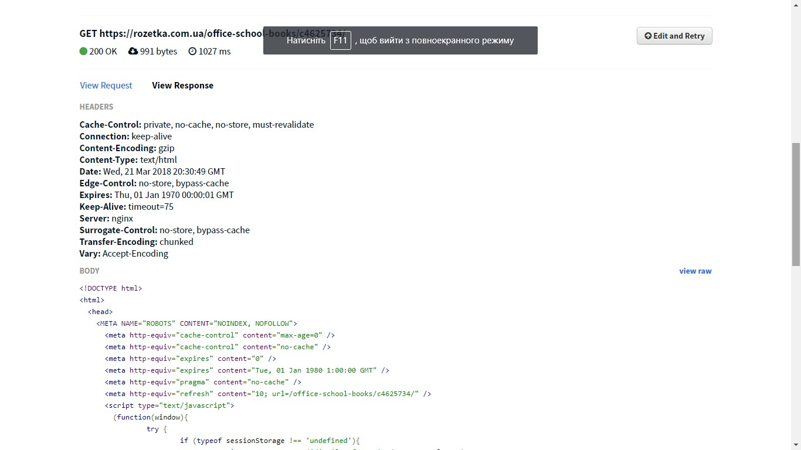7. Using the hurl.it : the same as above task, but you need to create the "HEAD" requests
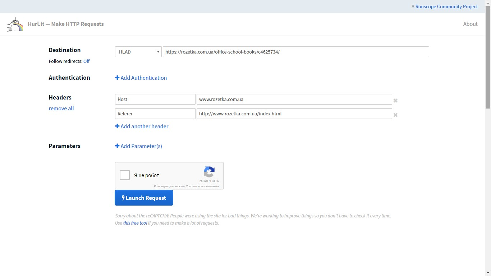 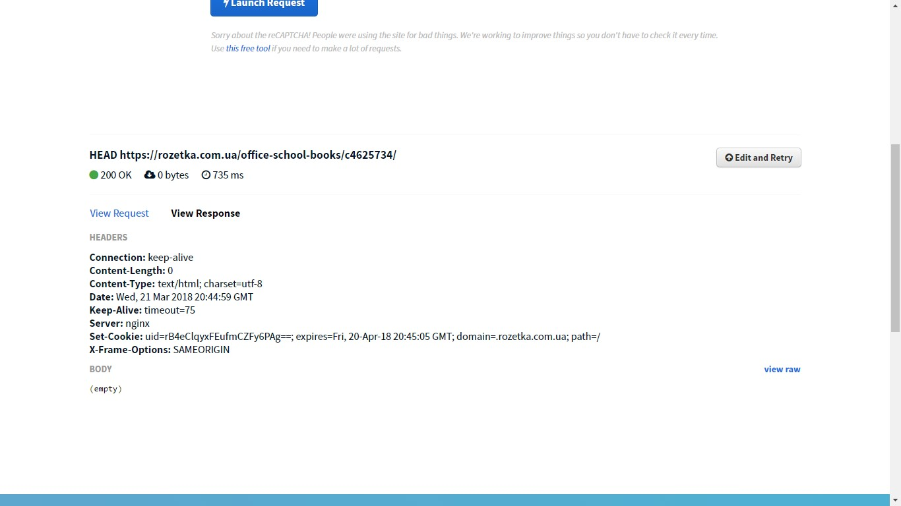8. What is the different with GET request?
При запиті HEAD сервер не повертає вміст http-відповіді, є лише код відповіді і HTTP headers, а не сам документ.


9. Find and show few (at least 5) resources, where POST method is used
Можна визначити за допомогою Hurl.it надіслати запит POST або за допомогою DevTools у вкладці Network
https://cursor.education/feedbacks https://rozetka.com.ua/
https://rozetka.com.ua/
 https://prometheus.org.ua/
https://prometheus.org.ua/
 https://www.wikipedia.org
https://www.wikipedia.org
 https://www.duolingo.com/
https://www.duolingo.com/